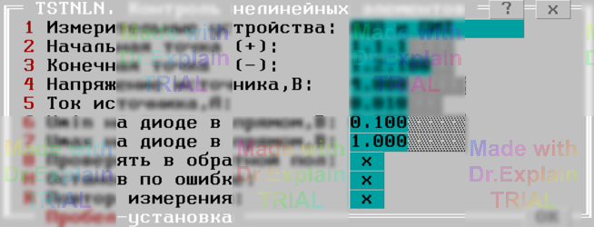

3.9 Контроль нелинейных элементов (TSTNLN)
Тест предназначен для измерения падения напряжения на диоде при прямом и обратном его включении.
Утилита предоставляет меню, показанном на рисунке:

Опция "Измерительные устройства" имеет установки: "АЦП и ПИТ и "Вольтметр и ПИТ" и задает измеритель напряжения (АЦП или вольтметр).
Опции "Начальная точка (+)" и "Конечная точка (-)" задают входы АСК, к которым подключены анод и катод проверяемого диода, соответственно.
Опции "Напряжение источника,В" и "Ток источника,А" задают режим работы источника напряжения/тока. Напряжение должно быть равно 4В или 10В, а ток выбираться из ряда 1мА, 10мА, 50мА, 100мА.
Опции "Umin на диоде в прямом,В" и "Umax на диоде в прямом,В" задают диапазон контроля, в котором должно находиться напряжение на диоде, включенном в прямой полярности ("+" источника на анод, "-" на катод).
Опция "Проверять в обратной пол" задает дополнительную проверку диода при включении его в обратной полярности ("-" источника на анод, "+" на катод). Успешным считается измерение, при котором значение измеренного напряжения больше или равно величине напряжения источника, умноженной на 0.9.
При проверке в протокол выполнения выводятся сообщения вида (для состояния
опций на рисунке выше):
$TST1 Uизм(1.1.100,1.1.1)=550мВ д.быть 100 < мВ < 1000
$TST1 Uизм(1.1.1,1.1.100)=4.005В д.быть 3.5 < В < 4.5
- проверка диода в прямой и обратной полярности, соответственно.
При завершении очередного цикла проверки предоставляется меню, см. п. 6.3.